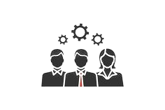
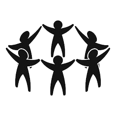

We believe that education is both the means as well as the end to a better life the means because it empowers an individual to earn his/her livelihood and the end because it increases one's awareness on a range of issues - from healthcare to appropriate social behaviour to understanding one's rights - and in the process help him/her evolve as a better citizen. Education is the most effective tool which helps children build a strong foundation: enabling them to free themselves from the vicious cycle of ignorance, poverty and disease.



More than just providing help, we also focus on building community strength. We promote autonomy and create opportunities for people to be independent and contribute to community development. Our charity fund is not only a source of spiritual support but also a financial and material source. We provide the necessary resources to help recipients achieve their goals and overcome difficulties. Please join us in sharing love and sacrifice to build a stronger community. By volunteering, donating, or spreading the word, you are contributing to making a positive difference in the lives of those in need. We believe that education is both the means as well as the end to a better life the means because it empowers an individual to earn his/her livelihood and the end because it increases one's awareness on a range of issues - from healthcare to appropriate social behaviour to understanding one's rights - and in the process help him/her evolve as a better citizen. Education is the most effective tool which helps children build a strong foundation: enabling them to free themselves from the vicious cycle of ignorance, poverty and disease.